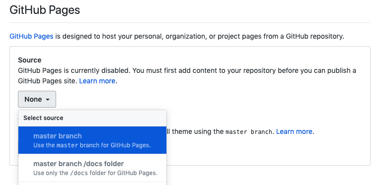
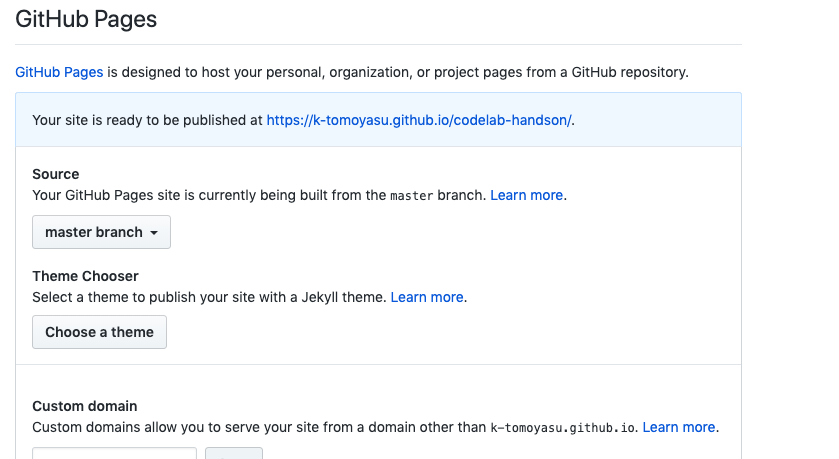

このCodelabではGoogle Codelabを作成し、Github Pagesで公開するまでを環境構築から行なっていきます。
様々な実装のガイドラインやチュートリアルをハンズオン形式で学ぶコンテンツです。Googleが誰でもCodelabを作れるようにツールを公開しており、良い感じのコンテンツを簡単な編集作業で作ることができます。
今回紹介するコンテンツの作成・公開には以下のようなメリットがあると考えています。
claatとはGoogleが公開しているGolang製のCodelab作成用CLIツールです。
claatのGitHubリポジトリからダウンロードできます。
https://github.com/googlecodelabs/tools/releases/
Golangの環境がある場合は、go getでもOKです。
go get github.com/googlecodelabs/tools/claat
Google Docsで作成中のCodelabをプレビューするchrome extensionがあります。作業効率がかなり上がるので、以下リンク先から入れておきます。
https://chrome.google.com/webstore/detail/preview-codelab/lhojjnijnkiglhkggagbapfonpdlinji
まずは新規のGoogle Docsを作成します。Google DocsでのCodelab用の記法が定められており、これに従うことでわりと簡単にリッチなコンテンツが作れます。
記法については以下のリンク先が分かりやすいです。ここでは割愛して、このDocsをコピペしてしまいます。
Docsを書き上げたら、claatを使ってhtmlを出力していきます。
claat export {GOOGLE_DOCS_ID}
claatのexportコマンドのパラメータにDocsのIDを渡すことで出力されます。
DocsのURL「https://docs.google.com/document/d/hogehoge/」の「hogehoge」部分がIDとなります。今回作成しているDocsのURLは「https://docs.google.com/document/d/1MxMjBX-KfNBqZuYNT-SbinOcac6GN8Lz6ojfFSlCCxI」なので、IDは「1MxMjBX-KfNBqZuYNT-SbinOcac6GN8Lz6ojfFSlCCxI」となります。このIDを使って以下のclaat exportコマンドを実行するとindex.htmlをはじめとした成果物が出力されます。
claat export
1MxMjBX-KfNBqZuYNT-SbinOcac6GN8Lz6ojfFSlCCxI
最初にexportする時にはGoogleアカウントの認証が求められます。CLIの指示の通りに実施すればOKです。
claatのv2.2.0ではバグ?でupdateコマンドが失敗するので代替方法を書いていきます
claatにはupdateコマンドがあるのですが、現在期待通りに動作しないのでexportコマンドによってDocsの更新を反映します。
毎回DocsのIDを指定してexportを実行するのは面倒なので、Makefileなりスクリプトなりに書くなどすると楽だと思います。
markdownでも作れるそうです。差分管理をがっつりやりたい・好きなエディタで編集したいなどの要求にマッチしていそうですが、Docsで作る方が楽なのでここでは紹介しません(できません)。
出力したCodelabコンテンツをWebに公開します。ここではGiHhub Pagesでの公開を進めていきます。
まずは、ここまでの成果物をコミットしてリポジトリにpushします。ルートディレクトリに「index.html」が置かれていることを確認してください。
pushが成功したら、Githubリポジトリの「Settings」からGitHub Pagesの公開設定を行います。
Settingページに遷移したら、Github Pagesのセクションの「Source」で「master brach」を選択します。

選択すると以下のようにGitHub PagesのURLが出力されます。

これで完了です！
https://k-tomoyasu.github.io/codelab-handson/にCodelabが公開されています。
Codelabを作成してGithub Pagesで公開するまでの流れをはここまでです。
ご指摘などあれば是非issueの登録やプルリクをお願いいたします。